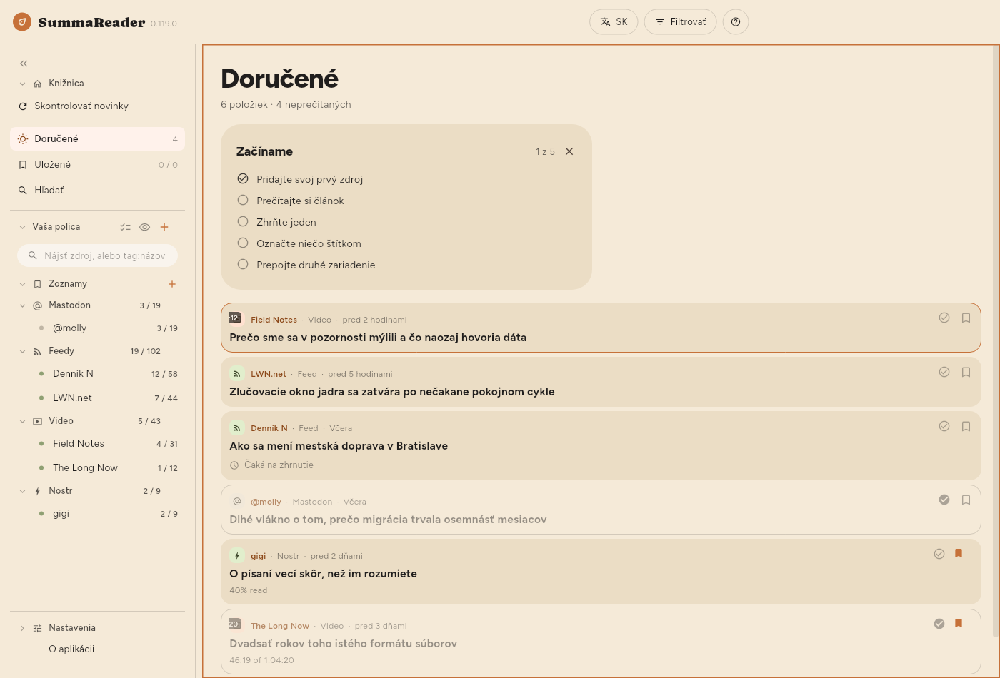
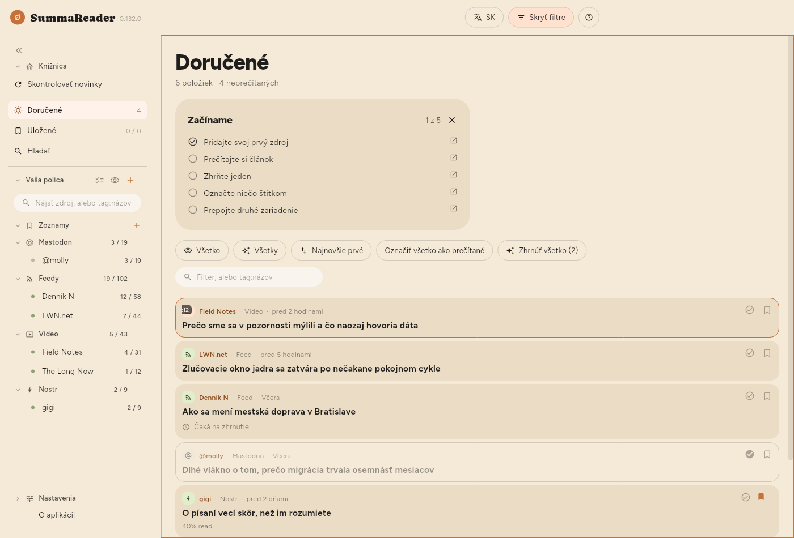

← Začíname · Obsah · Čítanie →
Okno

Horná lišta
| Ovládací prvok | Čo robí |
|---|---|
| EN | Jazyk rozhrania |
| Filtrovať | Zobrazí a skryje panel filtrov |
| ? | Pomocník k tomu, čo je na obrazovke |
Filtrovať sa zobrazuje, kým je na obrazovke zoznam — aj vtedy, keď vedľa neho čítate článok. Tlačidlo Filtrovať sa vyplní a zmení na Filtrované vždy, keď niečo zoznam zužuje, takže zoznam, ktorý ukazuje len časť seba, vždy povie prečo. V telefóne ☰ otvorí policu a Filtrovať je tlačidlo vedľa ?.
Polica
Zhora nadol vľavo: Knižnica so Skontrolovať novinky, Doručené, Uložené a Hľadať, potom Vaša polica so Zoznamy a kanálmi zoskupenými podľa druhu, a nakoniec Nastavenia úplne dole. Každý kanál ukazuje neprečítané / celkom; každý zoznam ukazuje, čo obsahuje. V telefóne je polica vysúvací panel, ktorý otvoríte cez ☰.
- Skontrolovať novinky hneď stiahne všetky zdroje.
- Pole hore zužuje iba policu a nič iné: časť názvu kanála alebo
tag:a časť štítka. Časť stačí, takžetag:gamnájdegamingajretro-gaming— a krátke slovo zachytí veľa, lebotag:ainájde aj kanál so štítkomretaila!tag:aiho skryje. Textové pole v paneli filtrov chce celý štítok. - Kliknutím na kanál uvidíte iba ten kanál.
- Kliknutím na zoznam uvidíte, čo je v ňom — pozri Uchovávanie.
- Vybrať viac (začiarknutia vedľa Vaša polica) alebo dlhé stlačenie riadka zobrazí pri každom kanáli ozubené koliesko. Koliesko otvorí vlastný panel kanála — pozri Správa zdrojov.
- Oko vedľa + skryje každý kanál, v ktorom nič nečaká.
- « zbalí policu na pásik ikon. To isté urobí
b.
Panel filtrov
Stlačte Filtrovať. Všetko, čo rozhoduje o tom, čo zoznam ukazuje, je tu. Predvolene je panel zatvorený, aby prvé, čo je pod nadpisom, bol prvý článok.


| Ovládací prvok | Čo robí |
|---|---|
| Neprečítané / Prečítané / Všetko | Ktoré položky zobraziť |
| Všetky / Zhrnuté / Nezhrnuté | Či existuje zhrnutie |
| Najnovšie prvé | Zoradenie — stláčaním prepínate šesť možností |
| Označiť všetko ako prečítané | Označí všetko, čo filter zahŕňa |
| Zhrnúť všetko | Zhrnie všetko, čo filter zahŕňa |
| Čipy druhov | Videá, kanály, príspevky — kliknutím zúžite |
| Textové pole | Hľadá slovo v názve, zdroji alebo zhrnutí, alebo tag:názov |
Poradie zoradení: Najnovšie prvé → Najstaršie prvé → Názov A–Z → Názov Z–A → Kanál A–Z → Kanál Z–A a znova od začiatku.
Filter prečítaných, filter zhrnutých a zoradenie si aplikácia pamätá medzi spusteniami. Výber kanála nie — to je navigácia a knižnica, ktorá sa otvorí zúžená na jeden kanál, ktorý ste vybrali minulý týždeň, vyzerá ako prázdna aplikácia.
Počty pod „Doručené“
Zobrazené 18 z 5 878 · 52 neprečítaných · 812 na zhrnutie
- Zobrazené sa ukáže iba vtedy, keď filter niečo zužuje, a počíta riadky, ktoré sú naozaj na obrazovke.
- na zhrnutie je to isté číslo ako na tlačidle Zhrnúť a presne toľko by jeho stlačenie urobilo.
Vzhľad zoznamu
| Nastavenie | Kde |
|---|---|
| Veľkosť písma | Nastavenia › Základné › Vzhľad › Text › Veľkosť písma |
| Hustota zoznamu | Nastavenia › Základné › Vzhľad › Zoznam › Hustota zoznamu |
| Zhrnutie v zozname | Nastavenia › Základné › Vzhľad › Zoznam › Zhrnutie v zozname |
| Náhľady | Nastavenia › Základné › Vzhľad › Zoznam › Náhľady |
| Riadkovanie, Šírka stĺpca | Nastavenia › Základné › Vzhľad › Článok |
| Kde je článok umiestnený | Nastavenia › Základné › Vzhľad › Rozloženie |
| Zoskupiť podľa zdroja | Nastavenia › Základné › Vzhľad › Zoznam › Zoskupiť podľa zdroja |
Hustota zoznamu určuje, koľko z každej položky zoznam vykreslí:
| Zhrnutie | Názov | Obrázok | |
|---|---|---|---|
| Pohodlná | zobrazené | voľne sa zalamuje | veľký |
| Kompaktná (predvolené) | — | dva riadky | malý |
| Hustá | — | jeden riadok | žiadny |
Pri voľbe Pohodlná nastavuje Zhrnutie v zozname (Nastavenia › Základné › Vzhľad › Zoznam › Zhrnutie v zozname), koľko z každého zhrnutia riadok ukáže: 2 riadky, 4 riadky alebo Celé zhrnutie (predvolené). Článok, ktorý ešte nemá zhrnutie, ukáže na tom istom mieste, slabšie a s rovnakým obmedzením, svoj začiatok: vlastný popis zo zdroja, inak prvé slová textu článku. Riadok je viditeľný len pri voľbe Pohodlná, lebo Kompaktná a Hustá žiadne zhrnutie neukazujú.
Náhľady: Obrázok ukazuje namiesto ikony druhu vlastný obrázok článku. Je to jediná z troch možností, ktorá niečo stojí: obrázky sa sťahujú po niekoľkých pre riadky na obrazovke, takže dlhý zoznam nevybavených sa dopĺňa postupne, nie naraz. Hustá toto nastavenie ignoruje — obrázok je vysoký tri riadky, a to nie je husté.
← Začíname · Obsah · Čítanie →